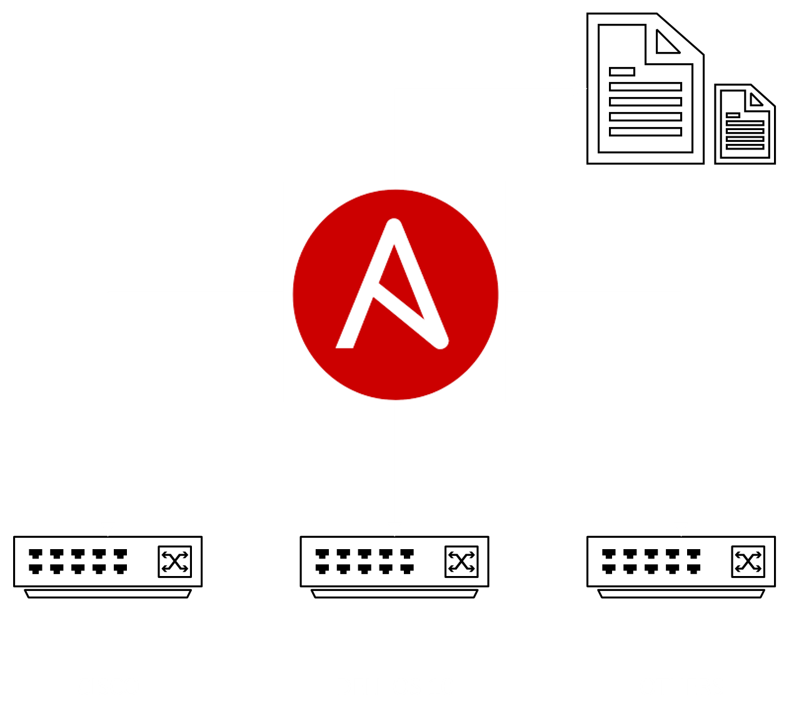
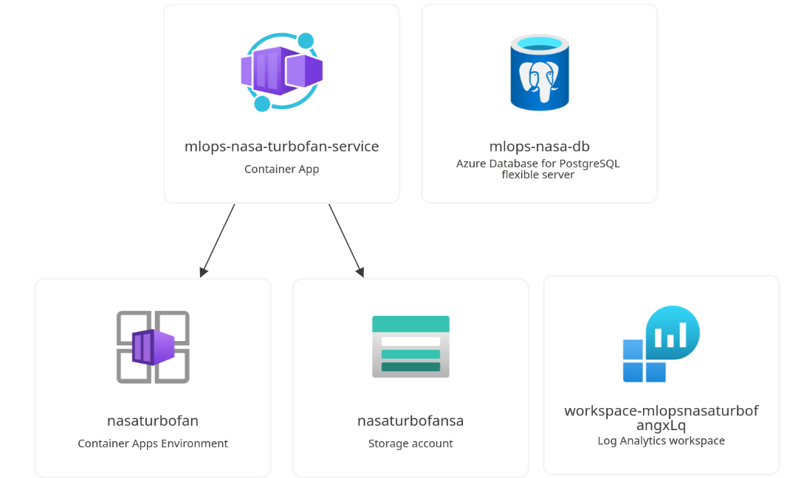

Network Appliance Config Backup
Automate the backup of Cisco and Dell device configurations.
Developed automated workflows using Ansible and Python to execute backups via SSH and APIs.This project was commissioned by 4IT Solutions.
Ansible
Python
YAML
SSH
closed source

Meraki License & Firmware Notifications
Event-driven monitoring for Cisco Meraki firmware and license lifecycles.
Utilized Azure Automation, PowerShell 7, and Meraki APIs for automated reporting.This project was commissioned by 4IT Solutions.
Azure Automation
PowerShell
Meraki API
Key Vault
closed source

Mig Music Generation Dashboard
Refactor a research Python pipeline into a production-ready application. Deploy the result to an on-premises server.
This project was developed in team with Fabian Tomasovic for a bachelor semester project in SUPSI.We created a multi container application with Docker, used docker compose to orchestrate the containers and implemented GitLab CI/CD for deployment and exposed various endpoints to interact with the pipelines with FastAPI.The platforms automates the full avaluation pipeline from reference audio to comparison of generated music. The system implements a four-stage pipeline and a web Dashboard provides researchesrs with an interactive interface to launch, run, monitor status, inspect generated audio and explore comparisons of model performance

NASA Turbofan Jet Engine — RUL Predictor
Predict the Remaining Useful Life (RUL) of jet engines using the NASA CMAPSS dataset to enable predictive maintenance.Use Machine Learing Operations tools and deploy the solution in cloud environment
Developed in collaboration with Giada Galdiolo for the SUPSI MLOps 2026 course. Implemented a full MLOps pipeline featuring a RandomForest model with Raw Data Replay for continual learning. The system includes automated data validation with pytest, experiment tracking via MLflow, and a containerized FastAPI for real-time predictions.

Multiagent Copilot RAG
Create a multi-agent chatbot to query enterprise knowledge across SharePoint and VTENext.
Built with Copilot Studio, Azure AI Search, and OpenAI, using Azure Functions for backend logic.This project was commissioned by 4IT Solutions.
Copilot Studio
Azure AI Search
OpenAI
Azure Functions
closed source

Backup Discovery Platform
Aggregate Veeam backup health data into a centralized platform.
Implemented C# .NET worker services and Azure Web Apps with Storage Accounts.This project was commissioned by 4IT Solutions.
This project was still in testing when i left it and has never gone to production
C# .NET
Azure Web Apps
Veeam API
Azure Storage
closed source
Mail Sentiment Analysis
Automate a sentiment pipeline for customer email feedback.
Integrated Azure AI Language Service with Azure Logic Apps for execution and storage.This project was commissioned by 4IT Solutions.
Logic Apps
Azure AI Language
Azure Storage
closed source